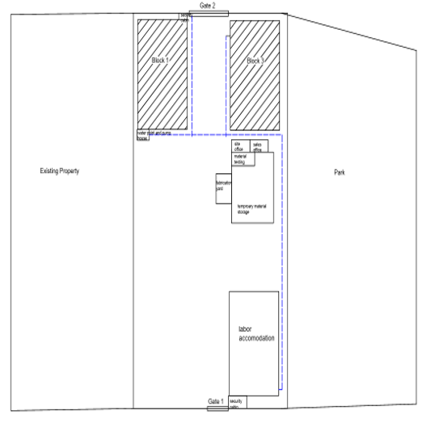
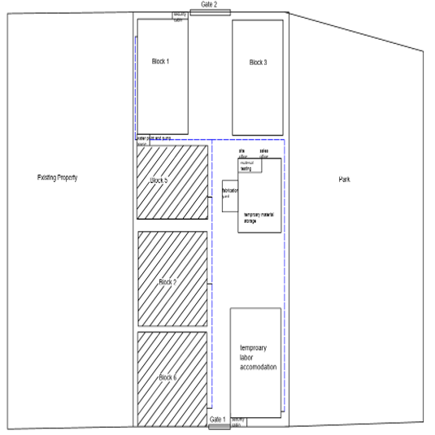
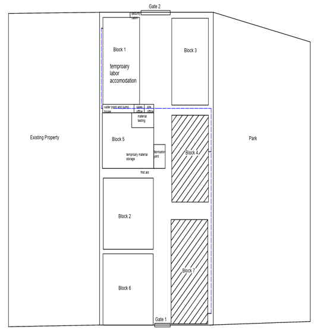
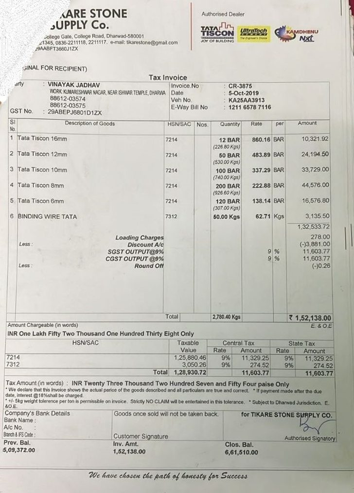
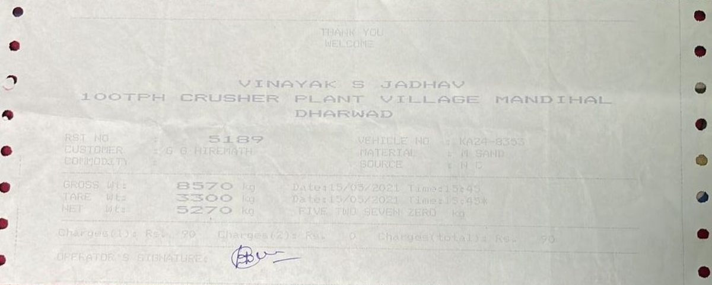
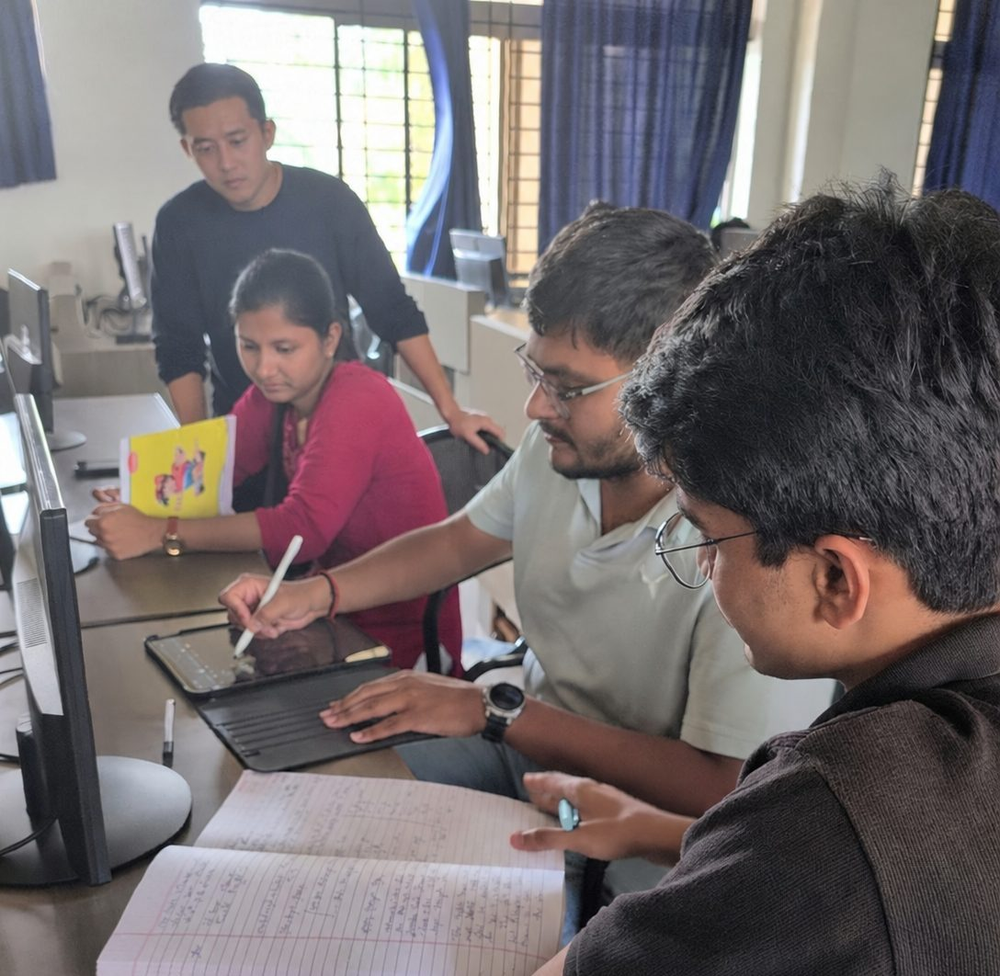
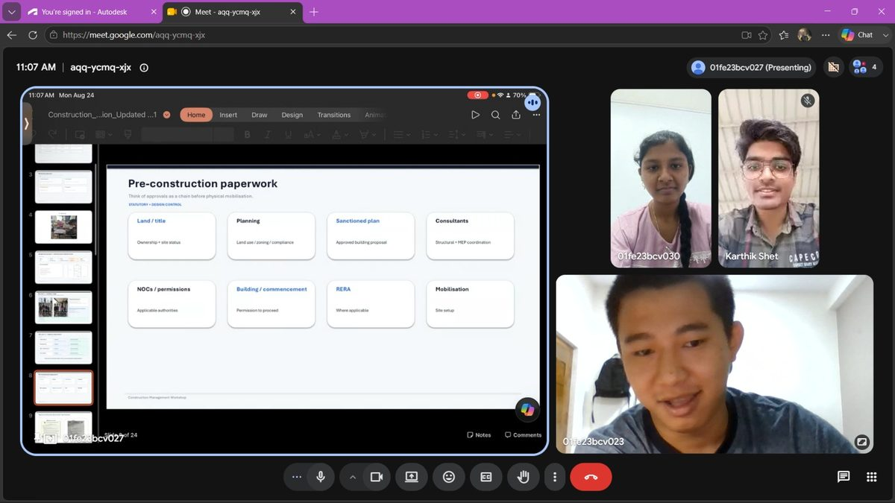

Problem Statement 02
Material Management
Theme — Develop a system for construction material procurement, QC, storage and accounts that is sustainable with minimum supervision from the project manager.
Download the team deck
The brief
A new store manager without large-project experience; the project starts in 15 days given. Set up procurement, QC, storage and accounts so the system runs with minimum day-to-day involvement from the project manager. The assignment requires: a store layout for consumables, non-consumables, equipment and safety gear; a decision on which gate is used for entry and exit; vehicle numbers recorded in and out; the driver's invoice split into three copies (security, store, accounts); QA/QC inspection with the store manager, close to the lab, with rejected material leaving at once; and accepted material going to its designated slot.
Need → Buy: planning and procurement controls
Item master and specifications
- One code per item: description, grade/specification, unit, approved brands, storage zone, reorder level
- Specifications taken from the drawings, BOQ and approved submittals
- Store cannot receive an item that is not in the item master
Indent (material requisition)
- Raised by the site engineer for a work package, from the 3-week look-ahead
- Checked against the BOQ / budget balance for that item
- Approval limits: site engineer → project engineer → PM only above a set value
Vendors
- Prequalification: capacity, quality record, test certificates, credit terms
- At least three comparative quotations for non-contract items
- Rate contracts for repeat items (cement, steel, aggregates, blocks)
Purchase order must state
- Grade / specification and approved brand
- Quantity, unit rate, taxes, delivery schedule and delivery point (Gate 2)
- Test certificates required per lot
- Rejection and return terms; payment terms
Gate → Receive → QC: the receiving process
| Step | Who | Record | Control |
|---|---|---|---|
| Vehicle arrives at Gate 2 | Security | Gate register: vehicle no., driver, PO no., invoice no., time IN; movement ID issued | Vehicle without a valid PO waits outside the work area |
| Invoice split | Security / store / accounts | Copy 1 stays with security, copy 2 to the store manager, copy 3 to accounts (as the assignment requires) | Accounts cannot pay without its copy |
| Quantity check | Store manager | Count, weighbridge slip or measurement; condition | Shortfall noted on delivery challan |
| Quality check | QA/QC inspector (not the store manager alone) | Test certificate check; site/lab tests where specified | Decision: ACCEPT / HOLD / REJECT |
| Rejected | QA/QC + store | Rejection note with reason, quantity, photos | Material leaves site at once; vehicle exits under the same movement ID |
| Accepted | Store manager | GRN for the accepted quantity only | Material moved to its designated slot |
| Vehicle exits | Security | Time OUT against the same movement ID | Every IN has an OUT |
Gate 2 (north, nearest the store and lab) is the logistics gate for IN and OUT. Gate 1 is kept for people and emergency access. If trucks cannot turn safely inside, use Gate 2 IN / Gate 1 OUT as a controlled loop.
Store: zones and material-specific storage
Store zones
- A · consumables (cement, admixtures, small items)
- B · bulk (aggregates, steel, blocks)
- C · tools and non-consumables
- D · PPE issue point
- E · receiving + QC hold
- F · rejected / return — marked DO NOT USE
| Material | Storage instruction |
|---|---|
| Cement | Dry, covered shed on a raised platform; away from walls; stacks by lot with date; first in, first out |
| Reinforcement | Segregated by diameter, grade and heat / lot; on raised supports; tagged; protected from mud, oil and uncontrolled corrosion |
| Aggregates and sand | Separate bins by size on hardstanding with drainage; no mixing of fractions; protected from contamination |
| Admixtures and chemicals | As per manufacturer; labelled with expiry date; locked area |
| Blocks and bricks | Stable stacks on level ground; handled to avoid breakage |
| Formwork and timber | Dry, flat and organised; graded by condition (see PS4) |
| Tools and PPE | Racks with issue register; PPE issued against worker ID |

Issue → Reconcile: stock and accounts
Issue
- Only against an approved material request for a work package
- Record quantity, location (block / level / member), receiver and date
- Returns of unused material recorded the same way
Daily stock equation
Weekly physical count of fast-moving items; monthly full count. Differences above a set limit go to the PM as an exception.
Three-way match before payment
Accounts pays only when quantity, rate and specification agree across all three. The three invoice copies above are for routing; the three-way match uses three different documents.
Exception dashboard (what the PM sees)
- Late deliveries against PO dates
- Price variance against PO or rate contract
- QC rejections and holds
- Stock-out risk (below reorder level)
- Slow-moving stock
- Missing documents (no GRN, no invoice, no test certificate)
- Consumption variance against BOQ / BBS
Phased site plans and sample records











Proposed 15-day set-up
| Days | Stage | Work |
|---|---|---|
| 1–3 | Design | Store zones, item master, roles and approval limits, gate rule, registers |
| 4–6 | Forms | Indent, PO, gate register, receiving, QC, GRN, stock, issue, return, rejection forms; invoice routing |
| 7–9 | Physical set-up | Label bays; mark receiving, QC hold, accepted and rejected zones; test truck routes |
| 10–12 | Accounts link | Three-way match, opening stock, reorder levels, exception dashboard; train store and security |
| 13–15 | Trial and close | Mock delivery, mock rejection and mock issue; fix gaps; sign off the SOP |
Data limitations & assumptions
- Store and yard positions follow the team's phase plans; dimensions must be checked against the AutoCAD drawing.
- Approval limits, reorder levels and count frequencies are proposed values for the team to agree.
- Ledger, invoice and weighment images are sample formats, not records of this project.
Conclusion
Minutes of meeting (actual team meetings)
Minutes — Kick-off & task allocation
- Reviewed PS2 and the 15-day deadline.
- Agreed workstreams: store layout, gate control, invoices, QC, accounts, stock records.
- Fixed the supplied site plan as the base; adjacent property and park excluded.
Attendees: Karthik, Major, Apramey, Vijayalaxmi · 4 Sep 2026


Outcome
Responsibilities and required records identified.
Minutes — System review & finalisation
- Checked the workflow against every PS2 condition.
- Reviewed the three phase plans and the shared-gate option.
- Confirmed three-copy invoice routing and the hold / accept / reject process.
Attendees: Karthik, Major, Apramey, Vijayalaxmi


Outcome
Workflow agreed in principle; final sign-off depends on site dimensions.